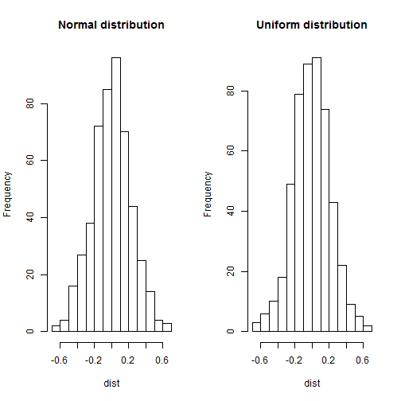

A statistical theory that states that given a sufficiently large sample size from a population with a finite level of variance, the mean of all samples from the same population will be approximately equal to the mean of the population.
Central Limit Theorem
Dynamic illustration with Rshiny App
Chunxiang Zheng
Central Limit Theorem
Large number of trials lead to smoother distribution

Take an average of bigger number of samples makes distribution narrower

Sample distribution other than normal distribution has same result
